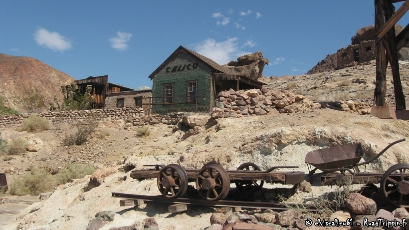

Quelques photos

Les Etats-unis, c’est avant tout le pays des extrêmeS
A vu de nez, les 4×4 et voitures sportives représentent l’essentiel des véhicules que ce soit en ville ou à la campagne.
Les routes sont gratuites ce qui change de la France et elles sont globalement en bon état.
C’est le pays du fast-food mais il y a une chaine dédiée à la cuisine et les chefs sont très valorisés.
Tout est grand, que ce soit les routes, les voitures, les maisons.